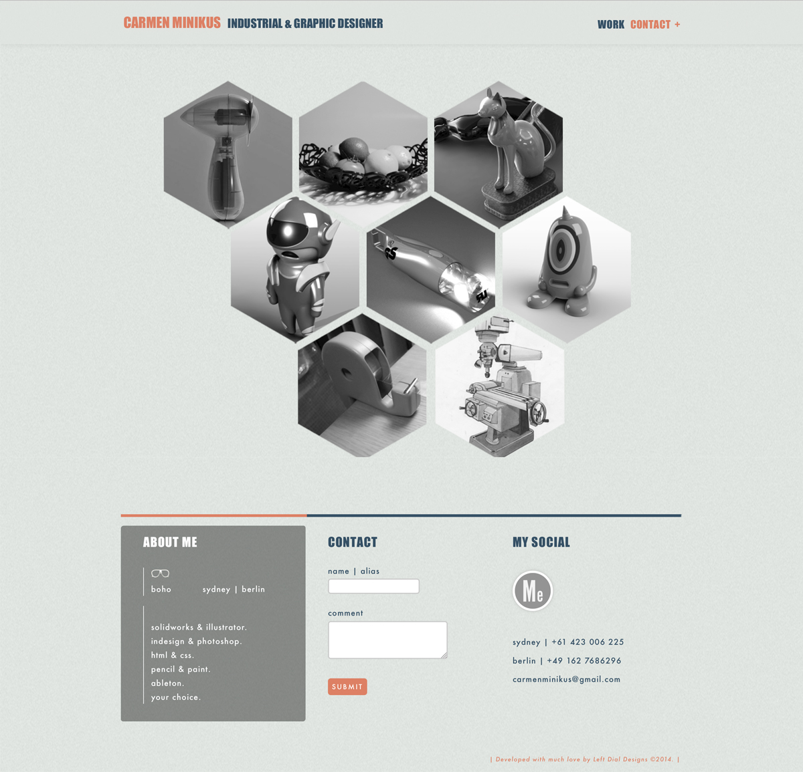
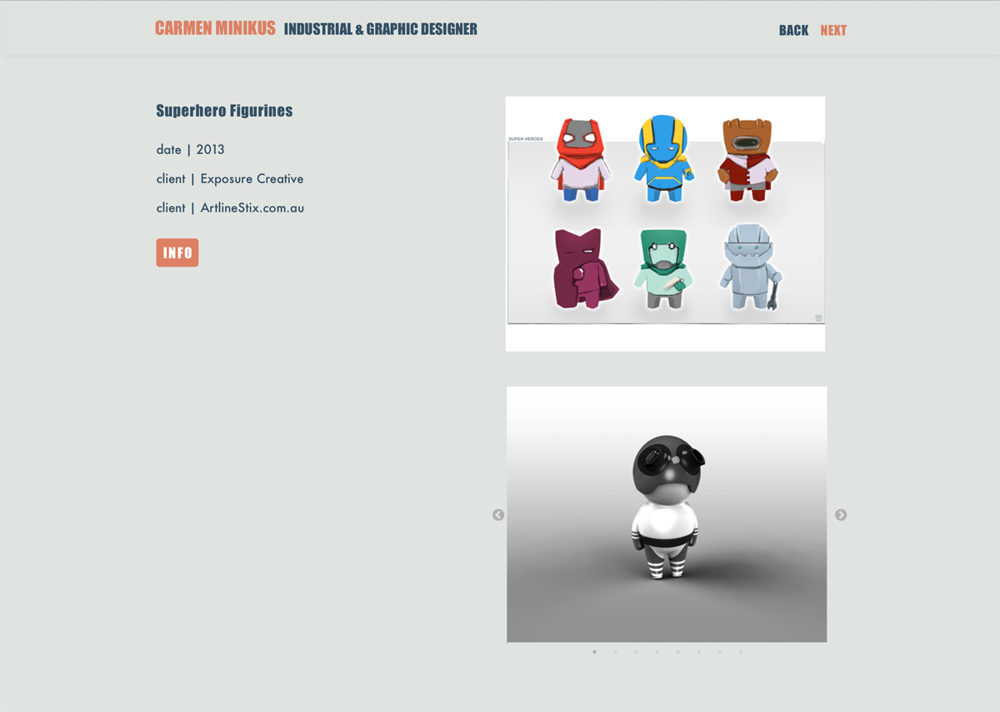
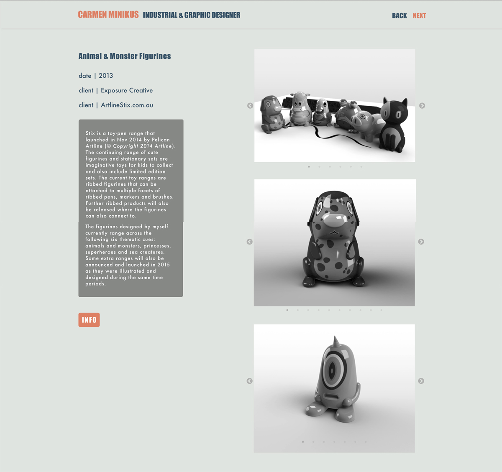

Carmen Minikus Industrial Design Portfolio
PROJECT INFO


Flash from the past! My Industrial Design Portfolio, including a range of skills including, prototyping, sketching, manufacturing, laser cutting, 3D printing, vaccum forming / injection molding, and adobe/illustrator skills
Check it out at: http://carmenminikus.com/


